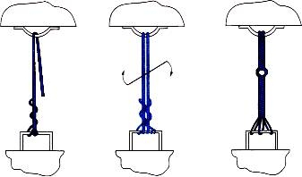
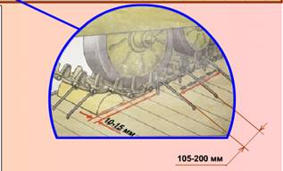
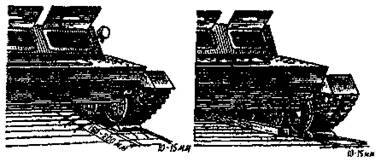

Üçünji usul boýunça HZM diametri 6 mm bolan simden dört çekme we dört direg dörtgyraň agaç bölegi bilen berkidilýär.
Çekmeleri gurnamagyň usullary
1-nji usul. Çekme, daňy bir bitewi sim sapagyndan ýerine ýetirilýär. Simiň bir ujy, aşakdaky suratda görkezilişi ýaly, wagonyň (ýüküň) daňy enjamynyň daşyndan iki gezek aýlanýar we sapagyň daşyndan azyndan iki gezek towlanýar. Simiň beýleki ujy ýüküň we wagonyň daňy enjamlaryndan yzygiderli geçirilip, zerur sanly sapakly çekme, daňy emele getirilýär. Simiň ujy wagonyň (ýa-da ýüküň) daňy enjamynda ýokarda görkezilen tertipde, ony çekmäniň, daňynyň sapaklarynyň ýarysynyň daşyndan aýlap berkidilýär. Berkitmek üçin simiň uçlarynyň uzynlygy azyndan 500 mm bolmalydyr. Berkidilende sapaklaryň uçlarynyň aýlanyş ugry şeýle bolmalydyr welin, soňra çekme towlanylanda olaryň berkidilişi gowşamaly däldir. Çekmäniň, daňynyň sapaklary lom ýa-da başga bir gural bilen dartylýança towlanylýar.

Surat. Çekmeleri 1-nji usul boýunça gurnamak
2-nji usul. Çekme, daňy bir bitewi sim sapagyndan taýýarlanylýar. Sapak wagonyň (ýüküň) daňy enjamyndan geçirilýär we aşakdaky suratda görkezilişi ýaly, onuň üstünde epilip, uzynlygy deň bolan iki sapakdan durýan örüm emele getirilýär. Soňra örüm yzygiderli ýüküň we wagonyň daňy enjamlaryna geçirilip, zerur sanly sapakly çekme, daňy emele getirilýär. Örümiň ujy wagonyň (ýüküň) daňy enjamynyň daşyndan iki gezek aýlanýar, soňra simiň uçlary - aýry-aýrylykda çekmäniň, daňynyň sapaklarynyň ýarysynyň daşyndan aýlanýar. Uçlary berkitmäge we çekmäni, daňyny towlamaga bolan talaplar 1-nji usuldakylar bilen meňzeşdir.
Surat. Çekmeleri, daňylary 2-nji usul boýunça gurnamak
3-nji usul. Çekme, daňy aşakdaky suratda görkezilişi ýaly, iki bitewi sim sapagyndan durýan örümden emele getirilýär. Örüm wagonyň (ýüküň) daňy enjamyndan geçirilýär we berkitmek üçin uzynlygy azyndan 500 mm bolan uçlary galdyrylyp epilýär, olaryň biri örümiň daşyndan azyndan iki gezek towlanýar. Çekme emele getirilenden soň örümiň her bir ujy aýratynlykda meňzeş tertipde dürli örümleriň daşyndan towlanýar.

Surat. Çekmeleri, daňylary 3-nji usul boýunça gurnamak
Çekmelerdäki sim sapaklarynyň sany we direg dörtgyraň agaç bölekleri gurnamak üçin skobalaryň ýa-da çüýleriň sany tablisa boýunça kesgitlenilýär.
|
Agramy maşynlar |
Çekmelerdäki sim sapaklarynyň sany, sany |
Sim sarp edilişi maşyna daňyny hasaba almak bilen açyk wagonlaryň bortlarynyň |
Direg dörtgyraň agaç bölegine skobalaryň sany, sany |
Maşyna jemi skobalar, sany |
|
|
kg |
ýöreýiş m |
||||
|
15 çenli |
4 |
10,0 |
45 |
2** |
8** |
|
15,1 – 25 |
6 |
14,5 |
65 |
3 |
12 |
|
25,1 - 50 |
8 |
19,0 |
85 |
3 |
12 |
* Skobalaryň sany kese süýşmeden goşmaça berkitmegi hasaba almazdan.
** Iki skobanyň ýerine diametri 6 mm we uzynlygy 200 mm bolan sekiz çüý ulanmaga rugsat berilýär.
Agramy 25 tonna çenli bolan maşynlar uzaboýuna bortlary açyk açyk wagonlarda daşalanda kese süýşmeginden goşmaça sütüniniň diametri 12 mm bolan gurluşyk skobalary ýa-da ölçegi 100×100×2000 mm bolan gapdal dörtgyraň agaç bölekleri bilen berkidilýär. Zynjyrlarynyň ini 400 mm we ondan köp bolan her bir maşyn sekiz skoba bilen, ini kiçi bolanda bolsa — on iki skoba bilen berkidilýär.
Skobalar açyk wagonyň düşegine zynjyrlaryň içki tarapyndan, olara perpendikulýar ýagdaýda, çetki direg tigirçekleriniň garşysynda iki ýa-da üç skobadan ybarat toparlar bilen kakylýar. Topardaky skobalaryň arasyndaky aralyk 150—200 mm bolmalydyr, zynjyr bilen skobalaryň arasyndaky aralyk bolsa — 10—15 mm. Skobanyň zynjyra ýakyn şahy ýarym, uzakdaky şahy bolsa doly kakylýar.

Gapdal dörtgyraň agaç bölekleri her bir zynjyryň ugry boýunça onuň içki tarapyndan düşelýär we her bir dörtgyraň agaç bölek diametri 6 mm we uzynlygy 200 mm bolan sekiz çüý bilen çüýlenýär. Zynjyr bilen gapdal dörtgyraň agaç bölekleriň arasyndaky aralyk aşakdaky suratda görkezilişi ýaly 10—15 mm bolmalydyr.

Surat. Harby zynjyrly maşyny kese süýşmeden berkitmek
süýşmeleri: a — skobalar bilen berkitmek; b — gapdal dörtgyraň agaç bölekleri bilen berkitmek
Maşyny ýüklemäge taýýarlamak
HZM açyk wagonda berkitmek üçin ýüklemezden öň şular zerurdyr:
— zynjyrlary şosse boýunça hereket edilýän ýaly dartmaly;
— hapadan, gyşyna bolsa gardan we buzdan gowy arassalamaly;
— tormoz ulgamynyň we diňiň saklaýjylarynyň sazlygyny barlamaly;
— ulanyş boýunça gollanma laýyklykda demir ýol boýunça daşamak üçin ýagdaýa getirmeli.
HZM açyk wagonda ýerleşdirmegiň we berkitmegiň tertibi
1. Maşyn açyk wagonda onuň uzaboýuna we kese okuna simmetrik goýulýar we direg dörtgyraň agaç bölekleriniň düşeljek ýerleri bellenilýär.

Dörtgyraň agaç bölekleri zynjyrlara berk direlip uzyn tarapy bilen açyk wagona kese düşelýär we düşege gurluşyk skobalary ýa-da diametri 6 mm bolan çüýler bilen çüýlenýär.
2. Maşyn açyk wagonda yzdaky jübüt direg dörtgyraň agaç bölekleri goýmak üçin ýer boşaýança öňe süýşürilýär. Yzdaky jübüt direg dörtgyraň agaç bölekleri goýulýar.
3. Maşyn açyk wagonda öňdäki jübüt direg dörtgyraň agaç bölekleri goýmak üçin ýer boşaýança yza süýşürilýär. Öňdäki jübüt direg dörtgyraň agaç bölekleri goýulýar.
4. Maşyn başlangyç ýagdaýyna gaýtarylýar.
5. Maşyn sim we tabel çekmeleri bilen berkidilýär.


Ýüklenen maşynlary daşamaga taýýarlamak
Açyk wagonda ýüklenen we berkidilen HZM daşamak üçin şular zerurdyr:
— yza ýöreýiş geçirişine goýmaly we tormozlamaly;
— geçiriş gutusynyň swipçegini we tormoz pedalyny şondan soň möhürlemeli;
— ýangyç beriş swipçegini nol ýagdaýyna goýmaly.